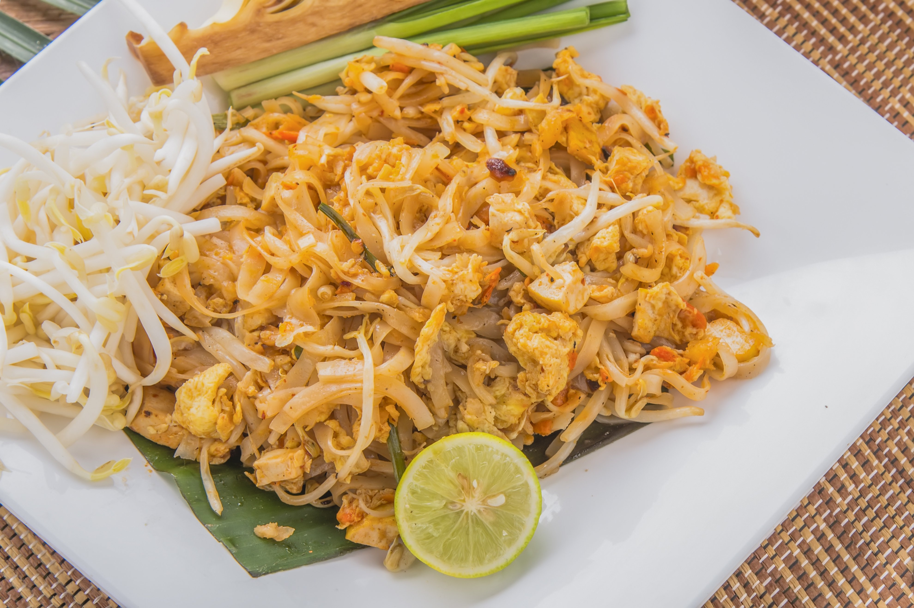

Pad Thai

Description
Classic Dish, you can never go wrong with this scrumptious mouth watering recipe.
Ingredients
- 1 pound flat rice noodles
- 3 tablespoons toasted sesame oil
- 1 tablespoon coconut oil
- 1 medium onion, diced small
- 1 pound boneless skinless chicken breast
- 3 to 5 cloves garlic
- 1 tablespoon ground ginger
- 8 ounces thinly sliced green cabbage
- 1 cup shredded carrots
- ⅓ cup low-sodium soy sauce
- ¼ cup fish sauce
- ¼ to ⅓ cup freshly squeezed lime juice
- 2 tablespoons honey or agave syrup
- 1 large egg, scrambled
- 2 tablespoons sriracha
- 3 green onions
- ⅔ cup chopped peanuts
Steps
- Cook rice noodles according to package directions, drain, rinse under cold water; set aside.
- To a very large skillet at least 4 inches deep, add the oils (vegetable and/or olive oil may be substituted for the sesame and coconut oil), onion, and sauté the onion over medium-high heat for about 5 minutes, or until onion is beginning to soften; stir intermittently.
- Add the chicken and cook for about 3 minutes, or until done; stir and flip nearly constantly to ensure even cooking. The chicken will cook very quickly if it’s sliced sufficiently thin.
- Add the garlic, ginger, and cook for about 1 minute, or until fragrant; stir nearly constantly.
- Add the cabbage, carrots, soy sauce, fish sauce, lime juice, stir to combine, cover skillet with a lid, reduce heat to medium-low, and simmer for about 3 minutes, or until cabbage wilts and softens. Remove lid and stir.
- Add the honey and stir to combine.
- Add the cooked noodles, turn off the heat, and stir well to combine.
- Add the scrambled egg, optional sriracha, and stir to combine.
- Evenly garnish with the green onions, peanuts, and serve.
- Enjoy!!!